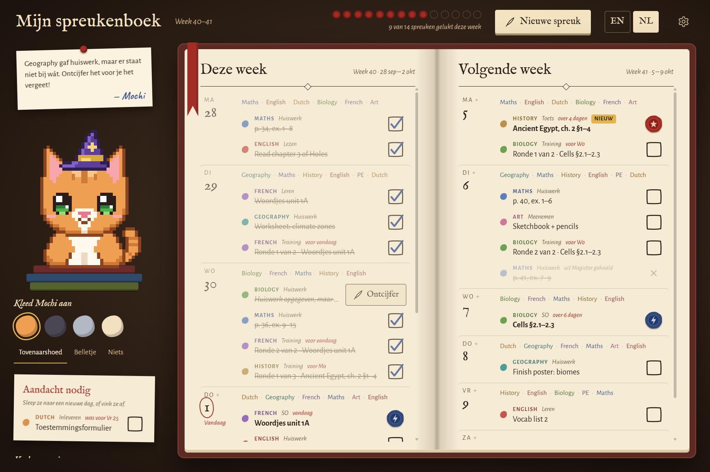
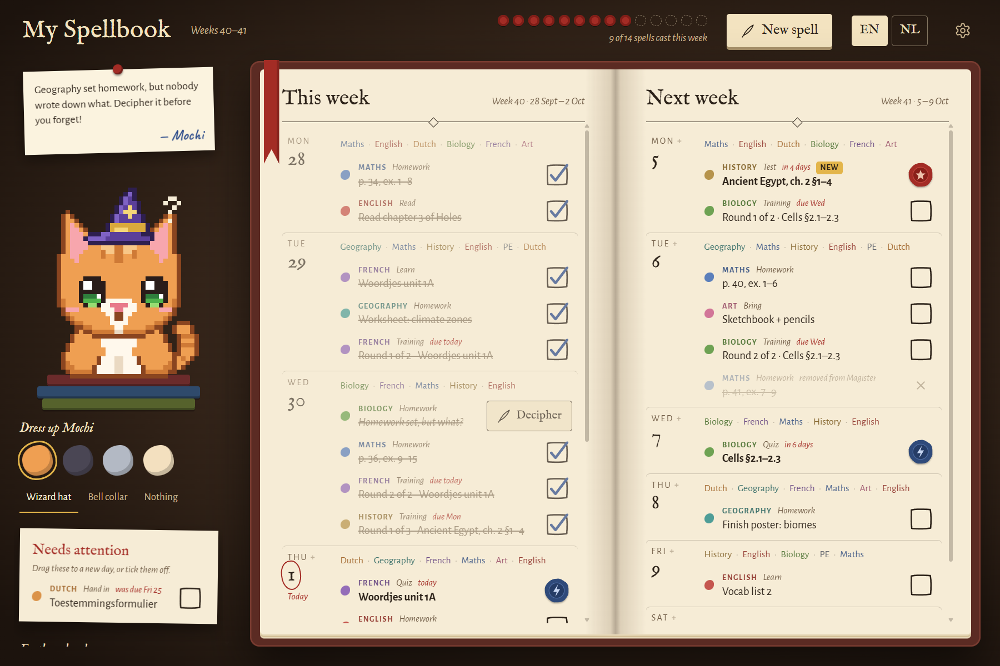

Je huiswerk, maar dan magisch. Your homework, but make it magic.
Learnling zet je huiswerk en toetsen van twee weken in één toverboek. Met een maatje dat je helpt onthouden wat er moet gebeuren, en dat juicht als je iets afvinkt. Learnling puts two weeks of homework and tests in one spellbook. With a buddy who helps you remember what needs doing, and cheers when you tick something off.
Voor Windows 10 en 11 · geen account nodig For Windows 10 and 11 · no account needed
Learnling werkt op een Windows-laptop of -pc. Open deze pagina daar om hem te downloaden. Learnling runs on a Windows laptop or PC. Open this page there to download it.
Tik op een maatje! Tap a buddy!
Wat kan Learnling? What does Learnling do?
-
Twee weken, één boekTwo weeks, one book
Deze week links, volgende week rechts, met per dag je lessen erboven. Op zaterdag slaat het boek vanzelf om. This week on the left, next week on the right, with each day's lessons on top. On Saturday the page turns by itself.
-
Haalt je huiswerk uit MagisterGets your homework from Magister
Koppel Magister en je lessen, huiswerk en toetsen komen vanzelf binnen. Learnling leest alleen en verandert nooit iets. Geen Magister? Typ het er zelf in. Connect Magister and your lessons, homework and tests come in by themselves. Learnling only reads and never changes a thing. No Magister? Type it in yourself.
-
Mysterie-rollenMystery scrolls
Staat er alleen "zie Teams"? Dan wordt het een mysterie-rol. Schrijf in je eigen woorden op wat je echt moet doen, dan weet je het straks nog. Does it just say "see Teams"? Then it becomes a mystery scroll. Write down what you really need to do in your own words, so you still know later.
-
Oefenrondes voor toetsenTraining rounds for tests
Heb je een toets of een SO? Learnling plant er vanzelf oefenrondes voor, verspreid over de dagen ervoor. Geen stampen op de laatste avond. Got a test or a quiz coming? Learnling plans training rounds in the days before it, all by itself. No cramming the night before.
-
Een seintje na schoolA nudge after school
Om vier uur vertelt je maatje wat er nog op je wacht. Liever een ander tijdstip? Kies het zelf. At four o'clock your buddy tells you what's still waiting. Rather another time? Pick your own.
-
Slepen en afvinkenDrag and tick
Sleep een taak naar een andere dag, ook met je vinger op een touchscreen. Afvinken voelt als een spreuk uitspreken. Drag a task to another day, even with your finger on a touchscreen. Ticking it off feels like casting a spell.
Zo ziet het eruit This is what it looks like


Kies je maatje Pick your buddy
Een kat, hond, papegaai, walvis of robot. Kies een kleur, een oogkleur en een hoed, en geef je maatje een naam. In de app kan dat allemaal ook. A cat, dog, parrot, whale or robot. Pick a colour, an eye colour and a hat, and give your buddy a name. You can do all of this in the app too.
Zo begin je How to start
-
1
Download Learnling met de gouden knop bovenaan en open het bestand. Download Learnling with the gold button at the top and open the file.
-
2
Zegt Windows
Windows heeft uw pc beschermd
? Klik op Meer info en dan Toch uitvoeren. Dat komt doordat Learnling nieuw is, niet doordat er iets mis is. Does Windows sayWindows protected your PC
? Click More info, then Run anyway. That's because Learnling is new, not because something is wrong. -
3
Kies je maatje, koppel Magister of vul je rooster in, en je bent klaar. Zet Starten met Windows aan voor het seintje na school. Pick your buddy, connect Magister or fill in your timetable, and you're done. Turn on Start with Windows for the nudge after school.
Learnling werkt op Windows-laptops en -pc's, nog niet op Mac of Chromebook. Nieuwe versies installeren zichzelf. Learnling runs on Windows laptops and PCs, not on Mac or Chromebook yet. New versions install themselves.
Voor ouders For parents
- Gratis.Free. Geen account, geen reclame, geen abonnement. No account, no ads, no subscription.
- Alles blijft op de laptop.Everything stays on the laptop. Het huiswerkboek staat op de computer zelf. Er gaat niets naar een server van ons; er is geen server. The homework book lives on the computer itself. Nothing goes to a server of ours; there is no server.
- Magister: alleen lezen.Magister: read only. Inloggen gebeurt op de echte Magister-pagina. Learnling bewaart geen wachtwoord en verandert nooit iets in Magister. Logging in happens on the real Magister page. Learnling stores no password and never changes anything in Magister.
- Open source.Open source. Alle code staat op GitHub, dus iedereen kan zien wat de app doet. All the code is on GitHub, so anyone can see what the app does.